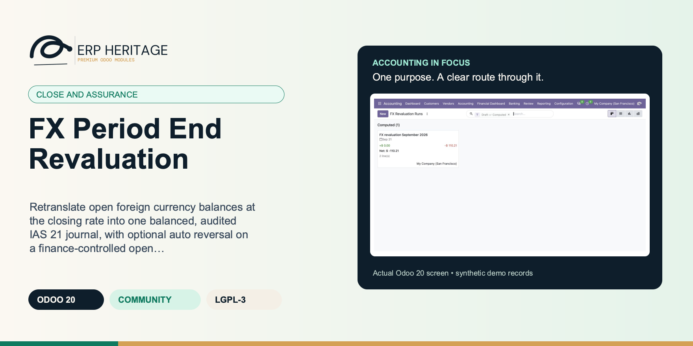
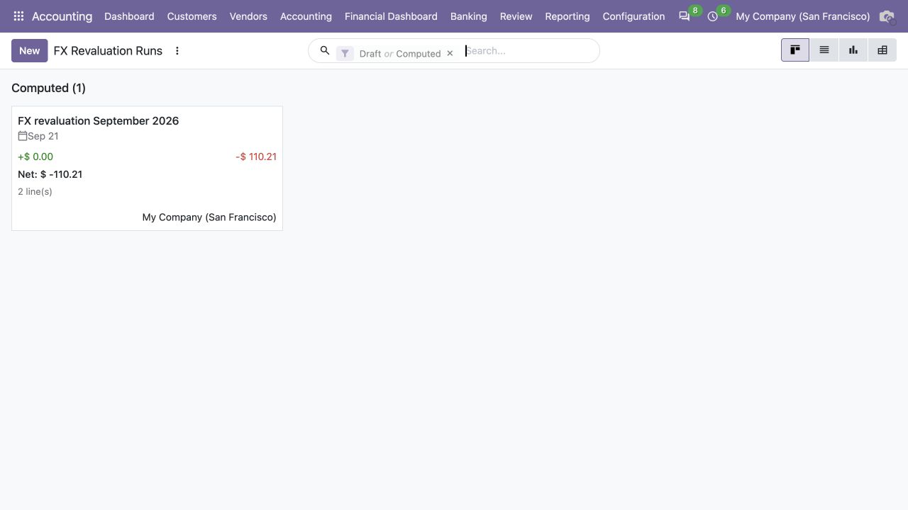
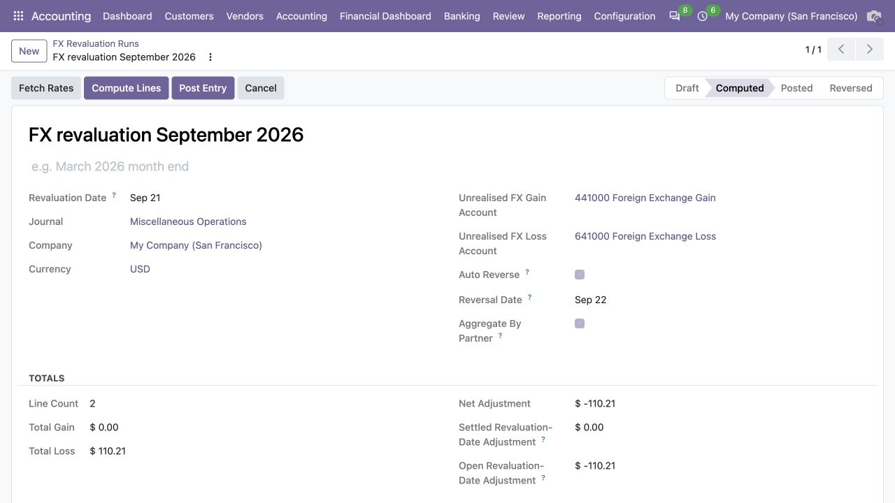
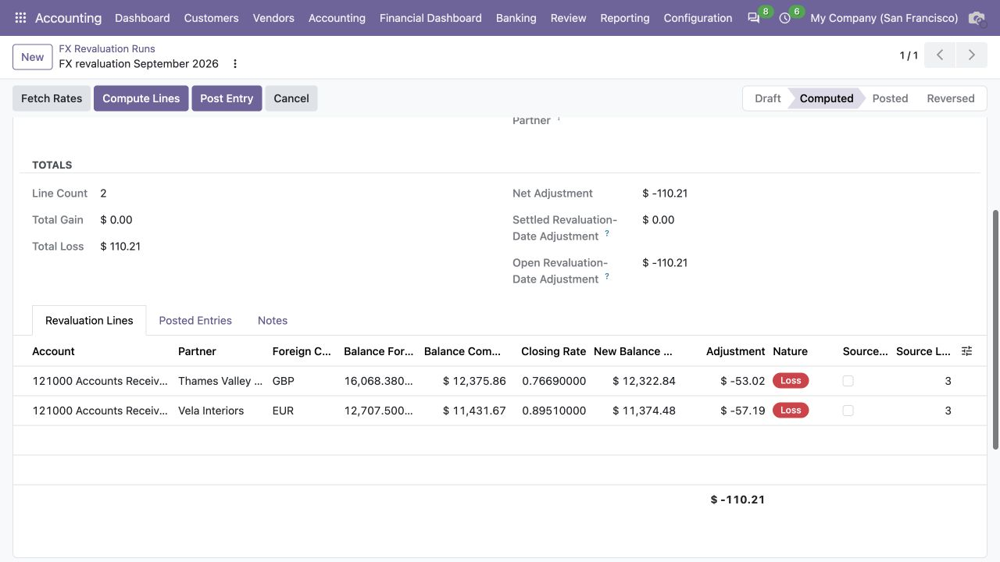

ERP HERITAGE / ODOO 20 COMMUNITY
Retranslate open foreign currency balances at the closing rate into one balanced, audited IAS 21 journal, with optional auto reversal on a finance-controlled open date.
LGPL-3 · Odoo 20 · v20.0.1.7.0 · Module guide, setup, workflows and rollout checks
The purpose
Translate open monetary foreign currency balances at the period end closing rate and post the unrealised gain or loss to P and L, per IAS 21 for the common case where the company keeps its functional currency in the ledger and transacts partly in foreign currencies.
Inside Odoo 20
Captured from Odoo 20 Community using synthetic demonstration records. Configuration screens show the available workflow; external service connectivity still requires the relevant provider setup and validation.

Computed FX revaluation run shows the net adjustment and supporting line count.
Captured 2026-09-22 from isolated Odoo 20 Community database with synthetic demonstration records. No external submission or live banking activity is represented.

Computed run records valuation date, gain and loss accounts and reversal settings before posting.
Captured 2026-09-22 from isolated Odoo 20 Community database with synthetic demonstration records. No external submission or live banking activity is represented.

Currency exposure lines compare closing rates and book balances to calculate unrealised FX adjustments.
Captured 2026-09-22 from isolated Odoo 20 Community database with synthetic demonstration records. No external submission or live banking activity is represented.
Inside this module
Open monetary balances are retranslated at the closing rate and the unrealised gain or loss is posted to one balanced journal. Non monetary accounts (inventory, fixed assets, equity) are rejected even if a user flags them, because IAS 21 carries them at historical rate.
Every adjustment is a queryable, exportable line carrying its closing rate snapshot, old and new balance, and partner. Each run stamps user and timestamp on every transition with full chatter, post and reverse are manager only, and a posted run cannot be re posted.
The ECB, Frankfurter and supported dated national feeds honour historical dates and weekend rules; latest-only sources identify the fixing date they actually returned. A configured fallback fills currencies the primary source omits. A missing closing rate still raises and names the currency instead of guessing.
Gain and loss classification respects the signed balance, so a positive adjustment on a credit balance liability is treated correctly versus the same adjustment on an asset. This sign inversion is the subtlety most spreadsheet workflows get wrong.
Open balance detection uses the foreign currency residual, so a line reconciled at a date after the revaluation date is still included while a fully settled line is skipped. Revaluation reflects what was actually open on the date.
The functional currency translation legs carry no amount in foreign currency, so the foreign currency residual stays on the original journal items and the same exposure is never revalued twice.
Within a run each currency is fetched from the rate source only once and cached, even across many account and partner groups, and only currencies present in open lines are requested from the provider.
The feed falls back from the daily to the 90 day historical XML for non business days and back dated runs and derives non EUR pairs by cross rate, then raises an explicit error rather than returning empty silently.
From input to outcome
Confirm the eligible balances and rates for the selected company and date before starting the revaluation run. Gather foreign-currency monetary items, reporting date, exchange rates, gain and loss accounts and reversal preference. Use a representative case with a known expected result so the team can separate configuration decisions from unexpected behaviour. Keep the supporting commercial or accounting evidence available during review.
Compute the adjustment lines and inspect original amounts, company-currency carrying values and the proposed revalued result. Follow the record’s available actions in the order intended by the workflow. Review the selected company, relevant dates and any validation messages before continuing. If the source data changes, reassess the result against the updated evidence.
On the last day of the period the controller opens a new revaluation run, pulls the missing closing rates (only the currencies that actually appear in open lines are fetched), and computes. The run scans every open foreign currency receivable and payable, groups them by account, partner and currency, and produces one adjustment line per group, each carrying the closing rate it used. A line reconciled later than the revaluation date still counts because open balance is judged on the foreign currency residual, not a reconciliation flag. Posting books the per group adjustments and a single balancing leg to the FX gain or FX loss account. The controller selects an open reversal date and ticks auto reversal, so the entry backs itself out on that controlled date and does not carry into a later reporting period.
Review missing-rate errors and exceptional items explicitly, then post the audited adjustment and its optional reversal configuration. Compare the outcome with the expected treatment for this case and record the reason for any difference that requires follow-up. Give exceptions an owner so they do not disappear inside a period-end spreadsheet.
Reconcile the run to the ledger and distinguish period-end unrealised adjustments from the settlement effects of later payments. Include the accepted operating example, configuration choices and unresolved dependencies in the handover. Review them when business policy, source data or the surrounding Odoo applications change.
Business situations
FX Period End Revaluation is relevant to multi-currency accountants and period-close reviewers who need to answer this question: Which foreign-currency monetary balances require a period-end adjustment at the selected closing rate? Start with the process that creates the decision, identify its owner and agree what evidence the reviewer needs. A narrow pilot helps the team evaluate the supported workflow using its own accounting data before broadening access.
Use the module’s close and assurance role as one part of a controlled close. Bring the relevant foreign-currency monetary items, reporting date, exchange rates, gain and loss accounts and reversal preference to the review, then explain the result alongside the business event it represents. Establish which outputs become part of the reporting pack and which outstanding matters need a separate accounting decision.
Turn the business question into an acceptance case: Which foreign-currency monetary balances require a period-end adjustment at the selected closing rate? Use one ordinary example and one relevant exception from the supported scope below. Ask the intended operator to prepare it and the reviewer to explain the result. Retain that accepted example with the deployment notes so future changes can be assessed against an understood process.
Before the first result
Confirm that the organisation needs the supported close and assurance process described here. Identify the responsible multi-currency accountants and period-close reviewers and write down the decision they expect the module to support. Use the limitations section to separate shipped behaviour from an integration, professional judgement or operational service that needs another owner.
Prepare foreign-currency monetary items, reporting date, exchange rates, gain and loss accounts and reversal preference. Check the relevant records in the intended company and use dates that match the business event. Resolve missing accounting configuration before evaluating calculated output; plausible-looking totals do not establish that the chosen inputs or policies are correct.
This module declares Accounting Suite Base as part of its installation foundation. Its direct standard-Odoo dependencies are account, mail. Review the actual dependency set in the target database before a rollout, especially where another addon also extends the same accounting models, menus or posting actions.
Define who operates FX Period End Revaluation, who reviews unusual results and who maintains configuration. Run the representative workflow below in a test database using the intended users. Confirm that users can reach the work they own and that the reviewer understands the available evidence before moving the process into live operation.
Workflow reference
The compute step scans every open foreign currency journal item on flagged accounts, aggregates by account, partner and currency, fetches the closing rate once per currency, and produces a revaluation line per group. The post step derives the gain and loss legs from those same per line adjustments, so the move balances by construction, with the balancing leg booked to the configured FX gain or FX loss account. Odoo's standard journal entry validation rejects any imbalance on post, and a run with no adjustments raises explicitly instead of posting an empty entry.
Each line stores the closing rate snapshot, the old and new balance, and the adjustment. Every run stamps user and timestamp on each transition (draft, computed, posted, reversed, cancelled) with full chatter tracking. Audit fields are readonly in the UI. Post and reverse are guarded to managers, and a posted run cannot be re posted.
Automatic currency exchange rate updates run on a daily cron, or on demand with the Update now button, through a pluggable provider registry. Central bank feeds need no API key and publish against their own base currency, which the module cross derives into the company currency automatically: European Central Bank with daily and 90 day historical XML, Bank of Canada, National Bank of Poland, Czech National Bank, Bank of Russia, National Bank of Romania, Bulgarian National Bank, Sveriges Riksbank, National Bank of Kazakhstan, Central Bank of Uzbekistan, Central Bank of Turkey, Reserve Bank of Australia, Central Bank of Brazil, Central Bank of Kuwait, Central Bank of Bahrain, Bank Negara Malaysia, Bank of the Republic of Colombia, Central Reserve Bank of Peru, Central Bank of Uruguay, and HMRC monthly. Broad coverage aggregators reach roughly 160 currencies, optional keyed services (including Bank of Mexico) are supported through a per company API key field, and an offline Gulf decree peg table serves the hard pegged dollar rates without any network call. The configuration auto defaults the provider from the company country.
A per company fallback provider fills any currency the primary source does not return, or covers the whole run when the primary is briefly unreachable, so a national feed that omits an exotic currency still resolves. Per currency manual overrides let finance pin a rate that has no clean feed while every other currency keeps auto updating, finer grained than an all or nothing manual mode. Each provider is selected per company; a single provider outage is caught per company so it never blocks the others. A missing closing rate raises explicitly, naming the currency, rather than falling back silently.
The module also ships a functional IFRS 9 hedge accounting engine (cash flow, fair value, net investment) with dollar offset and regression effectiveness testing, OCI versus P and L split posting, and OCI to P and L reclassification. The hedge workspace is available from FX Revaluation > Hedge Accounting; fair value changes are supplied manually or pushed from a treasury system into movement records (there is no automatic instrument valuation).
A CTA reserve registry tracks the cumulative translation reserve of each foreign operation on the parent's books. Net investment hedges park their effective portion in the position's equity account with the journal entry tagged to the position, so the reserve balance is fed straight from the ledger. On disposal of the foreign operation the full accumulated balance, including hedge amounts parked there, is reclassified from equity to profit or loss per IAS 21.48, with profit-or-loss recycling for associates/JVs and equity reattribution to NCI for subsidiary partial disposals that retain control under IAS 21.48A to 48C. Each revaluation run also splits its revaluation-date adjustment by subsequently settled versus still-open source items, shown on the run form, list and PDF report.
Regression effectiveness rejects a sign blind R squared by also requiring a negative slope near minus one, so a positively correlated, non hedging relationship fails the test instead of passing on correlation alone.
A per account FX Revaluation toggle, defaulted on for receivable, payable, bank and credit card accounts. Non monetary account types are rejected with an explanatory error to keep retranslation IAS 21 monetary only.
One run record per period end date moving through draft, computed, posted, reversed and cancelled. Compute, post and reverse are explicit actions, each transition is stamped, and the generated and reversal moves link back to the run.
One line per account, partner and currency, each storing the closing rate snapshot, old and new functional balance, and the adjustment, rounded with company currency precision before posting. Lines are real, queryable, exportable records.
Posting books the per group adjustment to the account and a single balancing leg to the configured FX gain or FX loss account. The gain and loss legs come from the same per line adjustments, so the move balances by construction.
Finance selects a reversal date after period end; posting pre-checks the accounting lock before it creates either entry.
More than twenty national central bank feeds, broad coverage aggregators reaching roughly 160 currencies, an offline Gulf decree peg table, and optional keyed services, all behind one pluggable registry. Each source publishes in its own base currency and the module cross derives into the company currency. The provider auto defaults from the company country, runs on a daily cron, and updates on demand from the configuration form.
A per company fallback source fills any currency the primary feed omits, or covers the run when the primary is briefly unreachable. Per currency manual overrides pin a rate that has no clean feed while every other currency keeps auto updating, finer grained than an all or nothing manual mode. A single source outage is caught per company so it never blocks the others.
Cash flow, fair value and net investment hedge models with dollar offset and slope guarded regression effectiveness tests, OCI versus P and L split posting, and OCI to P and L reclassification. Installs with the module and is reached via the Hedges action.
If set, open foreign currency balances on this account are translated at the closing rate during a period end FX revaluation run.
open: the reserve accumulates translation differences and NIH effective portions. disposed: the foreign operation was disposed of and its full balance was reclassified to P&L after a full disposal/loss of control (IAS 21.48); the position is frozen. A partial disposal retaining control keeps the position open and reallocates CTA to NCI.
Controls IAS 21 partial-disposal treatment. A partial disposal of a subsidiary without loss of control reallocates CTA within equity to NCI (IAS 21.48B). An associate/JV partial disposal reclassifies the proportionate CTA to profit or loss.
Equity account carrying this position's slice of the foreign currency translation reserve. NIH effective portions and consolidation translation differences tagged to the position post here.
Non-controlling-interest equity account credited/debited for a partial disposal of a subsidiary that retains control. No profit-or-loss reclassification occurs in that IAS 21.48B path.
Ledger-fed accumulated reserve balance: credit minus debit on the CTA account lines of posted journal entries tagged to this position. Positive = accumulated net translation gain.
Share of the accumulated balance to reclassify on the next Dispose. 100 disposes the whole operation and closes the position (IAS 21.48). Below 100 reclassifies the proportionate share for a partial disposal of an associate or JV (IAS 21.48A-C) and keeps the position open.
For a subsidiary, select when the transaction loses control. The full CTA balance is then reclassified to profit or loss under IAS 21.48A even if the ownership percentage sold is below 100. Leave clear when control is retained; the proportionate CTA is reattributed to NCI under IAS 21.48B.
CTA reserve position this entry feeds. NIH effective portions, consolidation translation exports and disposal reclassifications carry this tag so the position balance is computed straight from the ledger.
Hedge lifecycle. draft: parameters being entered. designated: formal IFRS 9 designation in place but no test performed yet. effective: most recent test passed. de-designated: management voluntarily ended the hedge. terminated: the underlying instrument expired or was sold.
Formal designation date. IFRS 9 hedge accounting starts from this date forward; gains and losses before this date go to P&L unconditionally.
Free-form description of the hedged item: forecast USD revenue Q3 2026, EUR-denominated trade receivable from Acme GmbH, net investment in DE subsidiary, etc. IFRS 9 requires the hedged item to be reliably measurable; document the measurement basis here.
Currency of the hedged exposure. For CFH on a USD forecast sale this is USD; for NIH on a EUR subsidiary this is EUR.
Quantitative effectiveness test. Dollar-offset checks the ratio of cumulative gain on the instrument to cumulative loss on the hedged item falls within 80-125%. Regression performs a linear fit of period changes and requires R-squared above the threshold.
True when the most recent test passed. The state auto-flips to effective on a passing test and stays in designated otherwise.
OCI reserve where the effective portion of CFH and NIH gains/losses accumulates. Typically an equity-class account named 'Cash Flow Hedge Reserve' or 'Foreign Currency Translation Reserve'. Required for CFH and NIH; ignored for FVH.
Balance-sheet account carrying the hedged item (the recognised asset, liability, or firm commitment). For a fair-value hedge the effective portion adjusts this account's carrying amount for the hedged risk, so only the ineffective portion reaches P&L. Required for FVH; ignored for CFH and NIH.
CTA reserve position of the hedged foreign operation (NIH only). When set, the effective portion posts to the position's CTA equity account and the entry is tagged to the position, so the position balance is ledger-fed and the parked amounts are recycled to P&L by disposing the position (IAS 21.48), not per movement.
Hedge documentation: risk management objective, strategy, method of measuring effectiveness, sources of ineffectiveness. IFRS 9 requires this to be in place at designation.
Cumulative fair-value change of the hedged item since designation. Positive = gain on hedged item. For CFH this is the variability in expected future cash flows.
Absolute ratio of |instrument change| to |hedged change|. The changes must also have opposite signs, and the ratio must fall within 0.80-1.25, to pass the dollar-offset test.
Slope of the regression of hedged-item change on hedging-instrument change. An effective hedge offsets the hedged item, so the slope must be negative and close to -1 (its absolute value within 0.80 to 1.25). R-squared alone is sign-blind, so the slope guards against a positively correlated, non-hedging relationship.
True when the test passes. Dollar-offset: opposite-signed changes and ratio in [0.80, 1.25]. Regression: R-squared >= threshold on the parent hedge.
Portion considered effective per the most recent effectiveness test. For CFH and NIH, OCI is capped at the lower of instrument and hedged-item changes. For FVH, the separately measured hedged-item change supplies the basis adjustment and both measured changes are recognised in P&L.
Measured change in the hedged item attributable to the hedged risk for this period. Use the opposite sign to the instrument change. It caps CFH/NIH deferral under IFRS 9 6.5.11(a) and is posted as the FVH hedged-item carrying-amount basis adjustment.
JE that reclassifies the OCI portion to P&L when the hedged transaction occurs (CFH) or the foreign operation is disposed (NIH).
Accounting date to use if this OCI movement is later reclassified to profit or loss. It must not precede movement date and remains editable until reclassification.
Optional second source used to fill any currency the primary provider does not return, or to cover the run when the primary is temporarily unreachable. Leave on Manual to disable the fallback. A broad aggregator is a good choice here so a national feed that omits an exotic currency still resolves.
Manual per-currency rates. An override always wins over the fetched value, so finance can pin a currency that has no clean feed while every other currency keeps auto-updating.
How often the scheduled job refreshes rates for this company. 'Manual only' never auto-fetches (finance pulls on demand); the others gate the daily cron on the elapsed time since the last successful fetch.
Upgrade safety hold. Earlier releases wrote provider quotes in the reciprocal direction and did not record provenance on res.currency.rate. Finance must review affected historical currency-rate rows before re-enabling automatic updates or FX revaluation.
Units of this currency for one unit of the company currency (Odoo company-rate direction). For example, with an AUD company and a USD override, 0.65 means 1 AUD = 0.65 USD.
New balance company minus Balance company. Positive moves the account up; sign is interpreted in light of the account nature to assign the gain or loss leg.
Exact journal items aggregated into this line at compute time. They drive the settled / open split: once every source item has been fully reconciled (settled), the line is classified as sourced from a settled exposure.
True when every source journal item behind this line has since been fully reconciled: the exposure was settled, so the exposure is settled. This is a settlement-status view of the revaluation-date adjustment, not a new realization entry.
Accounting date for automatic or later manual reversal. It must be after revaluation date and is frozen once run is computed.
Server-owned company ledger/rate version captured when Compute rebuilt the run. Posting is refused if source accounting or currency-rate data changed afterward.
Net adjustment of lines whose source journal items have all since been fully reconciled. This labels the settled-source share of the adjustment measured on the revaluation date; it does not book or infer a later realization entry. Not stored: it tracks live reconciliation state.
Net adjustment of lines whose source journal items are still open (unreconciled). These follow the configured auto-reversal date and remeasure at the next close until settled.
Illustrative implementation exercise. The company has an unsettled foreign-currency receivable at month-end. Review the original foreign amount, company-currency carrying amount and rate applicable at the selected closing date. Inspect the computed adjustment rather than entering a journal from a spreadsheet total with no line-level explanation. A missing rate should be resolved through configuration and evidence. Include an account that should not be treated as monetary to understand the eligibility boundary. Review the posted adjustment and any configured reversal date, then trace later settlement separately. The period-end revaluation and the eventual payment concern related exposure but different dates and accounting events.
Questions before rollout
It is designed for multi-currency accountants and period-close reviewers. Its central business question is: Which foreign-currency monetary balances require a period-end adjustment at the selected closing rate? The listing describes the shipped operating scope and the decisions that remain with the organisation. Evaluate it against your own records and review process, rather than treating the module name as a promise to cover every scenario in that accounting area.
Have foreign-currency monetary items, reporting date, exchange rates, gain and loss accounts and reversal preference ready, together with the person who owns the related accounting policy. Confirm the eligible balances and rates for the selected company and date before starting the revaluation run. A known example makes it possible to check the result and resolve configuration questions before the process is repeated across more records or companies.
Review missing-rate errors and exceptional items explicitly, then post the audited adjustment and its optional reversal configuration. Keep the relevant source evidence with the output and be explicit about company, date and policy choices. The most useful review asks whether the result follows from the business inputs, not only whether the operation completed without a validation message.
It belongs to the close and assurance family. Its declared custom dependency foundation is Accounting Suite Base. Installing the complete suite also brings other operating and specialist modules; using this focused module should be evaluated against its own dependency list and scope. Optional services still need their own configuration and agreement where applicable.
IAS 21 compliant for the common case where the company keeps its functional currency in the ledger and transacts partly in foreign currencies. It revalues open monetary balances, it is not a full foreign operation translation engine. Reconcile the run to the ledger and distinguish period-end unrealised adjustments from the settlement effects of later payments.
No. FX Period End Revaluation provides the specific records, calculations or workflow described in this listing. The organisation remains responsible for its source information, accounting choices, supporting evidence and review. Where the process uses an estimate, a contract assessment or an external service, appoint the appropriate owner before relying on the output.
Scope and requirements
IAS 21 compliant for the common case where the company keeps its functional currency in the ledger and transacts partly in foreign currencies. It revalues open monetary balances, it is not a full foreign operation translation engine.
The hedge accounting engine installs and is functional, but it is not yet surfaced on a top level menu. Reach the hedge records through the Hedges action rather than a dedicated menu item.
Hedge fair value changes are supplied manually or pushed from a treasury system into movement records. There is no automatic instrument valuation or market data feed for hedged items.
Audit fields are readonly in the UI, transitions are tracked in chatter, and posted run and line evidence is protected by model-level workflow and immutability guards.
A missing closing rate aborts the whole run by design rather than skipping the affected currency. There is no per line isolation that posts the rest of the run around a missing rate.
National central bank feeds need no API key. Broad coverage aggregators are a mid market reference and are not a substitute for a central bank published rate where local law requires the official figure. Pick the national feed for those jurisdictions.
The optional keyed services require your own provider key, entered per company. Without a key those sources stay inactive and the no key central bank feeds and aggregators are used instead.
A few national rates are published only through sources whose terms restrict redistribution, or through unstable scrape only pages, so they are not bundled. Those currencies are served through the aggregator and the manual override instead, and one market has no clean public feed at all.
The offline peg table carries decree fixed dollar rates for the hard pegged Gulf currencies. The Kuwaiti dinar floats against a basket, so it uses the live Kuwait feed rather than a peg.
Standards references describe the accounting subject addressed by the module. They do not establish certification, statutory filing acceptance or suitability for every jurisdiction. Your finance team owns its assumptions, accounting policies and review.
Installation scope
Odoo installs the following direct dependencies automatically. Additional dependencies can be brought in by those modules. Related modules in the wider catalogue are optional unless they appear in this dependency chain.
Shared reporting engine for the ERP Heritage Odoo 20 Community accounting suite, providing a reproducible report-execution audit log and a move-version result cache. Append-only audit log of every report render with user, timestamp, the full options snapshot, runtime, and a SHA-256 result hash for XLSX and PDF output, plus a multi-company analytic-aware parameterised SQL builder with no raw user input in SQL, a three-tier User/Manager/read-only Auditor privilege model, and a currency-aware XLSX writer. Odoo 20 Community accounting reporting engine, reproducible financial report audit trail, move-version report cache invalidation, multi-company parameterised SQL builder, append-only audit log, read-only auditor role, SHA-256 report hash compliance, currency-aware XLSX export, analytic-aware journal item aggregation.
Included dependency: eh_account_base. The shared reporting engine under the ERP Heritage accounting modules: an append-only render audit log, precise per-company cache invalidation, and a whitelist-only parameterised SQL builder.
Odoo Community dependency required by this module. Its own dependencies and configuration remain part of the installation scope.
Odoo Community dependency required by this module. Its own dependencies and configuration remain part of the installation scope.
Acceptance guide
The following are recommended rollout checks, not claims of additional built-in features. Apply the checks relevant to this module and retain evidence of your own results.
Select a recent, closed period that your finance team understands well. Keep its approved source documents, ledger totals and existing working papers available. Reproduce that period in a staging database before working on current transactions. A familiar period makes differences visible: you can distinguish an opening balance problem from a configuration choice, a timing difference or a genuine defect. Agree which person owns each discrepancy and what evidence will close it. Successful installation is the starting point; a repeatable business outcome is the acceptance criterion.
Write down the output your team needs from this module: a reviewed transaction, an exported file, a reconciled balance, an approved schedule or an operational queue. Identify who prepares it, who reviews it and who relies on it next. Make the scope concrete with one company, one reporting period and a small representative document set. Include an ordinary case and an exception. This keeps the evaluation focused on the business decision instead of the number of available screens, and gives reviewers a consistent way to compare the new workflow with their current process.
Use the Odoo 20 edition of the module and its dependencies together. The manifest defines what Odoo installs automatically; a feature mentioned elsewhere in the wider product family is not automatically included. Review the dependency guide on this page before enabling the complete suite, especially where your deployment also uses Sales, Purchase, Inventory or website components. Confirm that your hosting arrangement accepts custom server modules and their Python requirements. Keep a copy of the installed module versions with your acceptance record so a later update can be checked against the same baseline.
Check the companies, currencies, fiscal periods, journals, accounts and partner records used by your sample. Confirm that account purposes agree with your chart of accounts and that archived records are not being selected inadvertently. Review company-specific settings while the intended company is active. Where a workflow needs bank details, analytic dimensions, product information or payment terms, validate those inputs with their owner. Clean master data reduces repeated exceptions and makes it easier to investigate the exceptions that remain. Keep the preparation list short enough for someone else to repeat it.
Decide which source establishes the opening position before introducing new transactions. Save the source date, company, currency and supporting reconciliation. If a module maintains a schedule or a working-paper balance alongside the ledger, document how that opening amount should tie to the general ledger. Do not use balancing entries to hide a difference during the pilot. Classify the difference, correct its source and rerun the comparison. The resulting trail is useful both for your internal reviewer and for support if an unexpected calculation needs investigation.
Choose named users for preparation, review and administration. Confirm their practical access by signing in as those users in staging, rather than relying on an administrator's view of the menus. A visible menu does not replace model access or record restrictions, and a hidden menu does not by itself prove that data is protected. For your own acceptance check, verify the specific business operations each role needs. If your organization requires separation of duties, include that policy in the rollout criteria and check the actual workflow against it before granting production access.
Run the sample with the intended company selected, then repeat the relevant navigation and search checks as a user assigned to a different company. Record which company owns each source document and each generated result. For users who work across entities, confirm how their allowed-company selection affects totals and available records. Investigate any cross-company difference before it becomes a month-end problem. Group-level work and company-level work have different scopes; use the appropriate module and document the scope on the review evidence instead of assuming one screen represents both.
Include a company-currency case and, where relevant to the module, a foreign-currency case. Check the date used to select exchange rates and keep the rate source available to the reviewer. Add a transaction near a period boundary so the team can see whether document date, accounting date or another business date drives the result. Test decimal precision with a small amount as well as a large one. Record the expected rounding treatment. These checks turn vague differences in totals into questions that can be resolved against your accounting policy.
Choose one result and follow the available links or record references back to the original business document. Compare its company, partner, amount, currency and dates with the expected source. Where the workflow creates a journal entry, inspect the accounts and balancing lines before relying on an aggregate report. Where it exports a file, compare the file's records with the selected batch. Save a small, intelligible evidence set instead of an indiscriminate screenshot archive. A reviewer should be able to explain what happened without needing the original preparer beside them.
If this module creates or updates accounting entries, separate preparation from the decision to post in your operating procedure. Inspect the proposed outcome, resolve missing configuration and confirm the intended period before using a posting action. If the module does not post entries, identify the equivalent commitment point, such as sending a file or approving a review record. Record who is allowed to make that decision. The page describes the module's supported workflow; your team still needs an operating policy that fits its accounting responsibilities and approval structure.
From pilot to production
Use a deliberately incomplete sample in staging: a missing required setting, an unsuitable date or a source document that is not ready for the next step. Observe the actual message and the record state that remains. Correct the input and repeat the operation. Check that the recovered result agrees with the ordinary successful case. For transactions already committed, use the supported correction or reversal workflow rather than editing database records. Your acceptance record should explain how staff recover from mistakes, because that is part of day-to-day usability, not an unusual administrative task.
Repeat an import, calculation, preparation step or button action only where the documented workflow permits it. Confirm whether the expected behavior is a recalculation, a refusal, a new version or reuse of an existing record. Do not infer universal duplicate prevention from one successful test. Record the behavior of the actual operation your team will use and include it in staff guidance. A small, identifiable sample makes duplicate records easy to spot and avoids creating a misleading acceptance result from a large batch with poorly understood contents.
Where accounting dates are involved, inspect your company's lock settings and the role that can change them. Include one sample dated inside a closed period and one in the open period, then observe the supported behavior with normal finance access. Agree how the team will handle late documents and approved corrections. The goal is a clear route for legitimate work that preserves the reason the period was closed. Record the policy alongside the module's workflow so operators know when to stop and involve the person responsible for the close.
If the module produces reports or exchange files, have the intended recipient inspect a sample. For a finance report, check the filters, company, dates, currency, labels and totals. For a bank or service file, use that recipient's own validation or test process before a production submission. Generating a structurally valid file does not establish acceptance by every provider. Keep the exact sample and any recipient feedback with the rollout record. Where no export is provided, agree which supported screen or linked record serves as the handover evidence.
Identify any step that depends on a separately configured provider, connector, credential or commercial service. Confirm the exact adapter and its requirements before scheduling a live demonstration. Some family modules provide deterministic rules or file preparation without a live external connection; their usefulness should be evaluated on that basis. Test a provider failure in staging only when the adapter offers a safe test route. Make it clear who manages credentials and provider subscriptions, and who should be contacted when an external service is unavailable.
Time the operations your staff will actually repeat, using a dataset that resembles your expected company, date range and document volume. Record the environment and sample size beside the timings. Include navigation, filtering, preparation and review rather than quoting a single best-case page load. This page makes no universal performance promise: network latency, database size, customizations and infrastructure affect results. Use measurements to choose a practical rollout batch size and to identify any operation that needs investigation before more users join the workflow.
Give staff a short exercise that begins with a business situation and ends with a reviewed result. Include the expected amount or state, the navigation route, the point at which a reviewer becomes involved and the supported correction route. Let operators explain why their result is correct. Add only the settings and exceptions relevant to their role. A concise internal playbook built from your own pilot is easier to maintain than a large collection of unannotated screenshots, and it helps new users understand the relationship between this module and the rest of Accounting.
Capture the module version, Odoo version, affected company, operation, exact message and a minimal sequence of steps. Use redacted sample documents when sharing evidence outside your organization. State the expected result and the actual result separately. Include the date filters and role used, because the same record can look different with another scope or set of permissions. Never include passwords, API tokens or private keys in a support message. Good reproduction details allow the problem to be investigated without guessing at your business setup or asking staff to repeat a full close.
Before deploying an update, back up the database and filestore together, and restore that backup into an isolated environment. Apply the module update there, then repeat the key pilot scenarios using the saved acceptance record. Check that existing documents remain readable and that the expected actions and menus still lead to the right workflow. Include one newly created record as well as an older one. Keep a rollback plan appropriate to your deployment and confirm that the backup can be restored before scheduling the production change.
Agree the release criteria before the pilot ends: expected financial results, access boundaries, supported corrections, output acceptance and owner sign-off. List unresolved items with their business impact instead of treating every observation as a blocker or dismissing it as cosmetic. Start production with a manageable scope and a named reviewer. Keep the first cycle's evidence so that later enhancements can be assessed against a concrete baseline. App-store descriptions help you select and understand the module; acceptance in your own configuration establishes whether the workflow is ready for your team.
Connected capabilities
These related modules explain how this workflow connects to the wider accounting process. Only the dependencies declared above are installed automatically. Choose optional additions for a specific business need.
Audit Pack and Integrity hardens the period close so an auditor can trust the ledger. It switches Odoo's inalterable hash chain (restrict mode) on the company's sale, purchase, general, bank and cash journals, then scans the period for four integrity controls: no draft entries, every posted entry balanced to zero, every posted entry on a hash-restricted journal carrying its hash, and no open bank or cash suspense. A period is signed off only after it has ended and only by an EH Accounting Manager who is not the preparer. Sign-off advances both the fiscal-year lock and, where supported, the irreversible hard lock so no exception can reopen the vouched period. The gate is recomputed live at sign-off and the hash chain is re-verified through core, so a stale or tampered check row cannot vouch a period that no longer passes.
The shared engine that powers the ERP Heritage accounting modules for Odoo 20 Community. It auto-installs as a dependency of any ERP Heritage accounting module, so you do not need to install it by hand.
Period Close Workflow turns the repeatable month-end close that most teams run from a spreadsheet into a tracked process inside Odoo. Build a reusable checklist once, instantiate it for a period, work the tasks, request approval, and close, with a defensible audit trail at the end.
Year-End Closing computes the net result of a fiscal year from its posted journal entries, then generates one balanced closing entry that zeroes every income and expense account against a configured retained earnings account. The run is computed first, so the operator reviews the per-account profit-and-loss breakdown before anything posts. Posting and reversal are gated to the EH Accounting Manager group, and every step (computed, posted, reversed) is stamped with the user and timestamp and tracked on the mail.thread chatter.
ERP Heritage Community Accounting Pro installs a fixed collection of 50 direct accounting dependencies. Together with the suite itself and the transitive EH EDI Core foundation, its custom-module closure contains 52 modules. The collection brings reporting, reconciliation, payments, receivables, approvals, specialist accounting, group work and close controls into one Community installation. Its value comes from connecting those processes and their evidence; adoption still requires deliberate company configuration, accounting ownership and review. Australian BAS is available separately and installs the suite as its accounting foundation.
ERP Heritage
Start with the workflow, setup and acceptance guide above. For implementation or support, share your Odoo version, module version, business scenario and a redacted example. Keep credentials and personal data out of support messages.
Published by ERP Heritage. Odoo is a trademark of Odoo S.A.; this independently developed application is not an Odoo S.A. product or endorsement.
Package: eh_account_fx_revaluation · Release: v20.0.1.7.0 · License: LGPL-3.